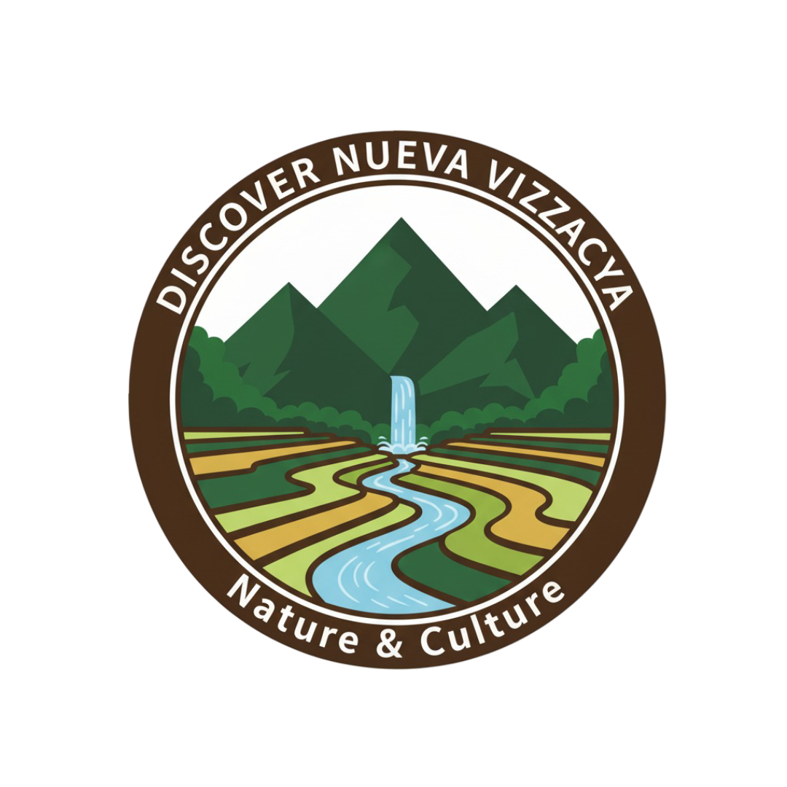

Nature & Culture in the Heart of Luzon
Discover Nueva Vizcaya - the name highlights the theme of exploration and showcasing the province's hidden gems.

This website will serve as a guide to Nueva Vizcaya, focusing on its nature, travel destinations, food, and cultural heritage. The purpose is to promote tourism and provide helpful resources for students, travelers, and locals who want to learn more about the province.
Home ├── Destinations │ └── Individual spots (Imugan Falls, Capisaan Caves, etc.) ├── Food & Culture │ └── Local dishes, traditions, festivals ├── Travel Tips │ └── Budgeting, transportation, safety ├── Photo Gallery └── Contact
Chosen fonts and usage:
[Header: Logo + Hamburger Nav]
[Hero Image + Intro Text]
[Featured Destinations (stacked cards)]
[Quick links to Food & Culture, Travel Tips]
[Footer: Contact + Social Links]
[Header: Logo + Horizontal Nav Bar]
[Hero Image Banner with Welcome Text]
[Top Destinations Grid (3 columns)]
[Food & Culture Highlights Section]
[Travel Tips Section]
[Footer: Contact, Social Links]
I will validate HTML and CSS using Dev tools, test contrast and readability for accessibility, check responsive layouts on mobile and desktop, and ensure all links and JavaScript features function correctly.